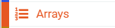
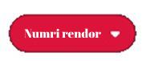
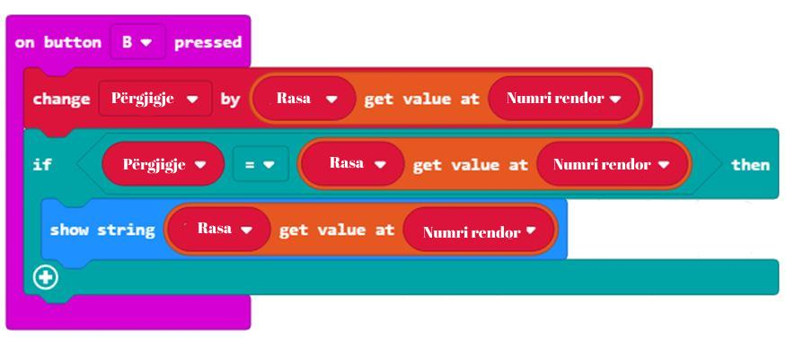

<!DOCTYPE html>
<html xmlns="http://www.w3.org/1999/xhtml" lang="en"></html>
  <head>
    <meta charset="utf-8" />
    <meta name="viewport" content="width=device-width, initial-scale=1.0" />
<title>Час 14 - Низови &#8212; Programimi i një pajisje Micro:bit në MakeCode </title>
    <link rel="stylesheet" href="_static/pygments.css" type="text/css" />
    <link rel="stylesheet" href="_static/basic.css" type="text/css" />
    <link rel="stylesheet" type="text/css" href="_static/activecode.css" />
    <link rel="stylesheet" type="text/css" href="_static/codemirror.css" />
    <link rel="stylesheet" type="text/css" href="_static/clickable.css" />
    <link rel="stylesheet" type="text/css" href="_static/pytutor.css" />
    <link rel="stylesheet" type="text/css" href="_static/modal-basic.css" />
    <link rel="stylesheet" type="text/css" href="_static/datafile.css" />
    <link rel="stylesheet" type="text/css" href="_static/dragndrop.css" />
    <link rel="stylesheet" type="text/css" href="_static/fitb.css" />
    <link rel="stylesheet" type="text/css" href="_static/matrixeq.css" />
    <link rel="stylesheet" type="text/css" href="_static/parsons.css" />
    <link rel="stylesheet" type="text/css" href="_static/lib/prettify.css" />
    <link rel="stylesheet" type="text/css" href="_static/poll.css" />
    <link rel="stylesheet" type="text/css" href="_static/showEval.css" />
    <link rel="stylesheet" type="text/css" href="_static/tabbedstuff.css" />
    <link rel="stylesheet" type="text/css" href="https://stackpath.bootstrapcdn.com/bootstrap/4.2.1/css/bootstrap.min.css" />
    <link rel="stylesheet" type="text/css" href="_static/video.css" />
    <link rel="stylesheet" type="text/css" href="_static/webgldemo.css" />
    <link rel="stylesheet" type="text/css" href="_static/webglinteractive.css" />
    <link rel="stylesheet" type="text/css" href="_static/karel.css" />
    <link rel="stylesheet" type="text/css" href="_static/notes.css" />
    <link rel="stylesheet" type="text/css" href="_static/simanim.css" />
    <link rel="stylesheet" type="text/css" href="_static/pycode.css" />
    <link rel="stylesheet" type="text/css" href="_static/p5js.css" />
    <link rel="stylesheet" type="text/css" href="_static/gallery.css" />
    <link rel="stylesheet" type="text/css" href="_static/dbDirective.css" />
    <link rel="stylesheet" href="_static/user-highlights.css" type="text/css" />
    <link rel="stylesheet" href="https://use.fontawesome.com/releases/v5.1.1/css/all.css" type="text/css" />
    <link rel="stylesheet" href="_static/bootstrap-4.0.0-dist/css/bootstrap.min.css" type="text/css" />
    <link rel="stylesheet" href="_static/flatly.min.css" type="text/css" />
    <link rel="stylesheet" href="_static/petlja-runestone.css" type="text/css" />
    <script id="documentation_options" data-url_root="./" src="_static/documentation_options.js"></script>
    <script type="text/javascript" src="_static/runestonebase.js"></script>
    <script type="text/javascript" src="_static/jquery.js"></script>
    <script type="text/javascript" src="_static/underscore.js"></script>
    <script type="text/javascript" src="_static/doctools.js"></script>
    <script type="text/javascript" src="_static/language_data.js"></script>
    <script type="text/javascript" src="_static/jquery.highlight.js"></script>
    <script type="text/javascript" src="_static/bookfuncs.js"></script>
    <script type="text/javascript" src="_static/codemirror.js"></script>
    <script type="text/javascript" src="_static/xml.js"></script>
    <script type="text/javascript" src="_static/css.js"></script>
    <script type="text/javascript" src="_static/python.js"></script>
    <script type="text/javascript" src="_static/htmlmixed.js"></script>
    <script type="text/javascript" src="_static/javascript.js"></script>
    <script type="text/javascript" src="_static/jquery_i18n/CLDRPluralRuleParser.js"></script>
    <script type="text/javascript" src="_static/jquery_i18n/jquery.i18n.js"></script>
    <script type="text/javascript" src="_static/jquery_i18n/jquery.i18n.messagestore.js"></script>
    <script type="text/javascript" src="_static/jquery_i18n/jquery.i18n.fallbacks.js"></script>
    <script type="text/javascript" src="_static/jquery_i18n/jquery.i18n.language.js"></script>
    <script type="text/javascript" src="_static/jquery_i18n/jquery.i18n.parser.js"></script>
    <script type="text/javascript" src="_static/jquery_i18n/jquery.i18n.emitter.js"></script>
    <script type="text/javascript" src="_static/jquery_i18n/jquery.i18n.emitter.bidi.js"></script>
    <script type="text/javascript" src="_static/activecode-i18n.en.js"></script>
    <script type="text/javascript" src="_static/activecode.js"></script>
    <script type="text/javascript" src="_static/clike.js"></script>
    <script type="text/javascript" src="_static/timed_activecode.js"></script>
    <script type="text/javascript" src="_static/animationbase.js"></script>
    <script type="text/javascript" src="_static/mchoice.js"></script>
    <script type="text/javascript" src="_static/timedmc.js"></script>
    <script type="text/javascript" src="_static/timed.js"></script>
    <script type="text/javascript" src="_static/mchoice-i18n.en.js"></script>
    <script type="text/javascript" src="_static/clickable.js"></script>
    <script type="text/javascript" src="_static/timedclickable.js"></script>
    <script type="text/javascript" src="_static/d3.v2.min.js"></script>
    <script type="text/javascript" src="_static/jquery.ba-bbq.min.js"></script>
    <script type="text/javascript" src="_static/jquery.jsPlumb-1.3.10-all-min.js"></script>
    <script type="text/javascript" src="_static/pytutor.js"></script>
    <script type="text/javascript" src="_static/codelens.js"></script>
    <script type="text/javascript" src="_static/skulpt.min.js"></script>
    <script type="text/javascript" src="_static/skulpt-stdlib.js"></script>
    <script type="text/javascript" src="_static/datafile.js"></script>
    <script type="text/javascript" src="_static/dragndrop.js"></script>
    <script type="text/javascript" src="_static/timeddnd.js"></script>
    <script type="text/javascript" src="_static/dragndrop-i18n.en.js"></script>
    <script type="text/javascript" src="_static/fitb.js"></script>
    <script type="text/javascript" src="_static/timedfitb.js"></script>
    <script type="text/javascript" src="_static/fitb-i18n.en.js"></script>
    <script type="text/javascript" src="_static/matrixeq.js"></script>
    <script type="text/javascript" src="_static/lib/prettify.js"></script>
    <script type="text/javascript" src="_static/lib/hammer.min.js"></script>
    <script type="text/javascript" src="_static/parsons.js"></script>
    <script type="text/javascript" src="_static/parsons-i18n.en.js"></script>
    <script type="text/javascript" src="_static/timedparsons.js"></script>
    <script type="text/javascript" src="_static/poll.js"></script>
    <script type="text/javascript" src="_static/reveal.js"></script>
    <script type="text/javascript" src="_static/shortanswer.js"></script>
    <script type="text/javascript" src="_static/timed_shortanswer.js"></script>
    <script type="text/javascript" src="_static/showEval.js"></script>
    <script type="text/javascript" src="_static/tabbedstuff.js"></script>
    <script type="text/javascript" src="_static/runestonevideo.js"></script>
    <script type="text/javascript" src="_static/webglinteractive.js"></script>
    <script type="text/javascript" src="_static/FileSaver.min.js"></script>
    <script type="text/javascript" src="_static/Blob.js"></script>
    <script type="text/javascript" src="_static/karelCorner.js"></script>
    <script type="text/javascript" src="_static/karelRobot.js"></script>
    <script type="text/javascript" src="_static/karelWorld.js"></script>
    <script type="text/javascript" src="_static/karelRobotDrawer.js"></script>
    <script type="text/javascript" src="_static/karelUI.js"></script>
    <script type="text/javascript" src="_static/karel.js"></script>
    <script type="text/javascript" src="_static/karel-i18n.en.js"></script>
    <script type="text/javascript" src="_static/notes.js"></script>
    <script type="text/javascript" src="_static/pygamelib-init.js"></script>
    <script type="text/javascript" src="_static/blockly/blockly_compressed.js"></script>
    <script type="text/javascript" src="_static/blockly/blocks_compressed.js"></script>
    <script type="text/javascript" src="_static/blockly/python_compressed.js"></script>
    <script type="text/javascript" src="_static/blockly/msg-sr.js"></script>
    <script type="text/javascript" src="_static/blockpy/utilities.js"></script>
    <script type="text/javascript" src="_static/blockpy/python_errors.js"></script>
    <script type="text/javascript" src="_static/blockpy/ast_node_visitor.js"></script>
    <script type="text/javascript" src="_static/blockpy/abstract_interpreter.js"></script>
    <script type="text/javascript" src="_static/blockpy/pytifa.js"></script>
    <script type="text/javascript" src="_static/blockpy/abstract_interpreter_definitions.js"></script>
    <script type="text/javascript" src="_static/blockpy/python_to_blockly.js"></script>
    <script type="text/javascript" src="_static/blockpy/imported.js"></script>
    <script type="text/javascript" src="_static/blockpy/blocks/class.js"></script>
    <script type="text/javascript" src="_static/blockpy/blocks/comment.js"></script>
    <script type="text/javascript" src="_static/blockpy/blocks/comprehensions.js"></script>
    <script type="text/javascript" src="_static/blockpy/blocks/dict.js"></script>
    <script type="text/javascript" src="_static/blockpy/blocks/if.js"></script>
    <script type="text/javascript" src="_static/blockpy/blocks/io.js"></script>
    <script type="text/javascript" src="_static/blockpy/blocks/lists.js"></script>
    <script type="text/javascript" src="_static/blockpy/blocks/sets.js"></script>
    <script type="text/javascript" src="_static/blockpy/blocks/loops.js"></script>
    <script type="text/javascript" src="_static/blockpy/blocks/parking.js"></script>
    <script type="text/javascript" src="_static/blockpy/blocks/tuple.js"></script>
    <script type="text/javascript" src="_static/blockpy/blocks/turtles.js"></script>
    <script type="text/javascript" src="_static/blockpy/blocks/text.js"></script>
    <script type="text/javascript" src="_static/blockpy-modal.js"></script>
    <script type="text/javascript" src="_static/simanim.js"></script>
    <script type="text/javascript" src="https://cdn.jsdelivr.net/pyodide/v0.16.1/full/pyodide.js"></script>
    <script type="text/javascript" src="_static/pycode.js"></script>
    <script type="text/javascript" src="//toolness.github.io/p5.js-widget/p5-widget.js"></script>
    <script type="text/javascript" src="_static/p5js.js"></script>
    <script type="text/javascript" src="_static/gallery.js"></script>
    <script type="text/javascript" src="_static/dbDirective.js"></script>
    <script type="text/javascript" src="_static/sql.js"></script>
    <script type="text/javascript" src="_static/mchoice-i18n.sr-Cyrl.js"></script>
    <script type="text/javascript" src="_static/mchoice-i18n.sr.js"></script>
    <script type="text/javascript" src="_static/mchoice-i18n.sr-Latn.js"></script>
    <script type="text/javascript" src="_static/dragndrop-i18n.sr-Cyrl.js"></script>
    <script type="text/javascript" src="_static/dragndrop-i18n.sr.js"></script>
    <script type="text/javascript" src="_static/dragndrop-i18n.sr-Latn.js"></script>
    <script type="text/javascript" src="_static/fitb-i18n.sr-Cyrl.js"></script>
    <script type="text/javascript" src="_static/fitb-i18n.sr.js"></script>
    <script type="text/javascript" src="_static/fitb-i18n.sr-Latn.js"></script>
    <script type="text/javascript" src="_static/parsons-i18n.sr-Cyrl.js"></script>
    <script type="text/javascript" src="_static/parsons-i18n.sr.js"></script>
    <script type="text/javascript" src="_static/parsons-i18n.sr-Latn.js"></script>
    <script type="text/javascript" src="_static/activecode-i18n.sr-Cyrl.js"></script>
    <script type="text/javascript" src="_static/activecode-i18n.sr.js"></script>
    <script type="text/javascript" src="_static/activecode-i18n.sr-Latn.js"></script>
    <script type="text/javascript" src="_static/jquery-ui-1.10.3.custom.min.js"></script>
    <script type="text/javascript" src="_static/jquery-fix.js"></script>
    <script type="text/javascript" src="_static/bootstrap-4.0.0-dist/js/bootstrap.min.js"></script>
    <script type="text/javascript" src="_static/bootstrap-4.0.0-dist/js/bootstrap.bundle.min.js"></script>
    <script type="text/javascript" src="_static/bootstrap-sphinx.js"></script>
    <script type="text/javascript" src="_static/waypoints.min.js"></script>
    <script type="text/javascript" src="_static/rangy-core.js"></script>
    <script type="text/javascript" src="_static/rangy-textrange.js"></script>
    <script type="text/javascript" src="_static/rangy-cssclassapplier.js"></script>
    <script type="text/javascript" src="_static/user-highlights.js"></script>
    <script type="text/javascript" src="_static/jquery.idle-timer.js"></script>
    <script type="text/javascript" src="_static/processing-1.4.1.min.js"></script>
    <script type="text/javascript" src="_static/jquery.hotkey.js"></script>
    <script type="text/javascript" src="_static/jquery-migrate-1.2.1.min.js"></script>
    <script type="text/javascript" src="_static/skulpt-stdlib.js"></script>
    <script type="text/javascript" src="_statis/skulpt.min.js"></script>
    <link rel="index" title="Index" href="genindex.html" />
    <link rel="search" title="Search" href="search.html" />
    <link rel="prev" title="Mësimi 13 - Ushtrimorja" href="Mësimi 13 - Ushtrimorja.html" />
<meta charset='utf-8'>
<meta http-equiv='X-UA-Compatible' content='IE=edge,chrome=1'>
<meta content='width=device-width, initial-scale=1.0, maximum-scale=1.0, user-scalable=0' name='viewport' />
<link rel="shortcut icon" href="_static/favicon.ico" type="image/ico" />

<script type="text/javascript">
  eBookConfig = {};
  eBookConfig.host = 'http://127.0.0.1:8000' ? 'http://127.0.0.1:8000' : 'http://127.0.0.1:8000';
  eBookConfig.app = eBookConfig.host + '/runestone';
  eBookConfig.ajaxURL = eBookConfig.app + '/ajax/';
  eBookConfig.course = 'Programimi i një pajisje Micro:bit në MakeCode ';
  eBookConfig.logLevel = '0';
  eBookConfig.loginRequired = 'false';
  eBookConfig.build_info = "";
  eBookConfig.isLoggedIn = false;
  eBookConfig.useRunestoneServices = 'false';
  eBookConfig.python3 = 'true';
  eBookConfig.basecourse = 'Programimi i një pajisje Micro:bit në MakeCode ';
  eBookConfig.runestone_version = '';
  eBookConfig.imagesDir = '_images/';
  eBookConfig.staticDir = '_static/';
  if(typeof(Sk) != "undefined")
      Sk.imgPath = eBookConfig.imagesDir;
</script>

<div id="fb-root"></div>


  </head><body>


<!-- Begin navbar -->

<nav id="navbar" class="navbar navbar-default navbar-fixed-top" role="navigation">

  <div class="container">

    <div class="navbar-header">
      <button type="button" class="navbar-toggle collapsed" data-toggle="collapse" data-target="#bs-example-navbar-collapse-1">
        <span class="sr-only">Toggle navigation</span>
        <span class="icon-bar"></span>
        <span class="icon-bar"></span>
        <span class="icon-bar"></span>
      </button>
      
    </div>

    <div class="collapse navbar-collapse" id="bs-example-navbar-collapse-1" style="margin-top: 10px; margin-left: 25px;">
      <ul class="nav navbar-nav">
        <li class="active"><a href="./">Programimi i një pajisje Micro:bit në MakeCode </a></li>
      </ul>
    </div>
  </div>
</nav>


<div class="container col-md-12" id="continue-reading"></div>

<div class="container col-md-8 col-md-offset-2" id="main-content" style="margin-top: 70px;">
  
  <div class="section" id="id1">
<h1>Час 14 - Низови<a class="headerlink" href="#id1" title="Permalink to this headline">¶</a></h1>
<p>На овом часу говорићемо о: ­</p>
<ul class="simple">
<li><p>­­чувању већег броја података;</p></li>
<li><p>низовима и њиховој примени.</p></li>
</ul>
<p>Сваки колекционар маркица, новчаница или сличица зна да je у неком тренутку потребно да организује своју колекцију, како би на што лакши начин могли да пронађу одређене сличице или новчанице. На пример, колекционар кованица може имати кутију за кованице нумерисане на овај начин (као на доњој слици):</p>
<a class="reference internal image-reference" href="_images/222.png"></a>
<p>Свакој кованици (новчићу) у колекцији потребан је властити простор за складиштење и јединствена адреса (0, 1, 2,…) како бисмо касније могли да пронађемо жељену кованицу.
Како се наши МејкКоду програми све више усложњавају и захтевају више променљивих да бисмо пратили одређене ствари, мораћемо да уместо променљивих које смо до сада изучили да пронађемо друге начине за складиштење и организовање свих својих података. Ситуације у којима треба да сачуваш већи број података честе су у раду сваког програмера. Оне захтевају примену другачије врсте променљивих, потребно је користити <strong>низове</strong>. За то у МејкКоду можемо користити блок <a class="reference internal" href="_images/223.png"></a>.</p>
<p>Низови представљају колекцију податка и можеш да га схватиш као „полицу” на којој се налази велики број “кутија”. Свака од “кутија” нумерисана је бројем (од 0 надаље). У свакој од “кутија” чува се по један податак (број, реч, знак,…). Дакле, у низовима се могу чувати бројеви, речи или музичке ноте, који се једним именом називају <strong>елементи низа</strong>.</p>
<p>Сваки елемент у низу је дефинисан <strong>индексом</strong>, број којим је одређен положај елемента у низу. Први елемент у низу има индекс 0. Дужина низа односи се на укупан број елемената у низу, а индекс последњег елемента у низу је увек један мањи од његове дужине (нпр. ако је дужина низа 5, индекс последњег елемента низа је 4).</p>
<p>Листу креираш тако што у категорији <em>Advanced</em> изабереш подкатегорију <em>Array</em> и изабереш блок:</p>
<a class="reference internal image-reference" href="_images/224.png"></a>
<p>Горњи блок креира празну листу под именом <strong>Lista</strong> (одабиром опције <em>New variable…</em> из падајуће листе).</p>
<a class="reference internal image-reference" href="_images/225.png"></a>
<p>Затим, листу можемо попунити са пет бројева, индексираних од 0 до 4. Елементе додајеш кликом на знак “+” уписивањем вредности у одговарајући  простор.</p>
<a class="reference internal image-reference" href="_images/227.png"></a>
<p>Хајде да направимо програм помоћу кога ћеш провежбати падеже, тачније утврдити падежни облик одређене речи (нпр. Који падежни облик добијаш одговором на питања ко, шта?).</p>
<p><strong>Фаза 1</strong></p>
<p>Размисли о проблему: За сваки падежни облик поставља се одговарајуће питање. Кликом на дугме А биће приказано питање, које ће се насумично бирати, док ће кликом на дугме Б бити приказан падежни облика који одговара том питању.</p>
<p><strong>Фаза 2</strong></p>
<p>Покрени МејкКод одабери и сложи блокове у простор за програмирање.</p>
<p>На интернет страници на адреси <a class="reference external" href="https://makecode.microbit.org">https://makecode.microbit.org</a> покрени нов пројекат кликом на дугме New Project <a class="reference internal" href="_images/86.png"></a>.</p>
<p>Сваком падежном облику одговара одређено питање. Потребно је да се креирају две листе: <a class="reference internal" href="_images/228.png"></a> и <a class="reference internal" href="_images/229.png"></a>. У ове низове уносиш елементе приказане на следећој слици:</p>
<p>Изглед низова:</p>
<a class="reference internal image-reference" href="_images/230.png"></a>
<p>Дефинисање низова <a class="reference internal" href="_images/228.png"></a> и <a class="reference internal" href="_images/229.png"></a>. Поред тога потребно је да дефинишемо и променљиву <a class="reference internal" href="_images/231.png"></a> као текстуалну променљиву (стринг) која ће чувати вредности низа <a class="reference internal" href="_images/228.png"></a>: <a class="reference internal" href="_images/232.png"></a>.</p>
<p>Изглед кода:</p>
<a class="reference internal image-reference" href="_images/233.png"></a>
<p>Питања која се постављају за падежни облик треба да буду елементи низа <a class="reference internal" href="_images/229.png"></a>. Падежни облик се налазе у низу <a class="reference internal" href="_images/228.png"></a>.</p>
<p>Као што видиш, величина (димензија) низа је 7, тј. оба низа имају по 7 елемената.</p>
<p>У горњим низовима, уочаваш да питање на позицији 1 низа <a class="reference internal" href="_images/229.png"></a> има одговор на позицији 1 низа <a class="reference internal" href="_images/228.png"></a>. Ово важи и за све остале елементе низа. Овакав принцип нам је важан због спаривања питања са падежним обликом.
Да би игра била што занимљивија (да питања не би увек кретала од првог и ишла до  последњег), можеш да уведеш насумични одабир питања из листе <a class="reference internal" href="_images/229.png"></a>.</p>
<p>Тачно је да ће игра бити интересантнија, али је исто тако тачно да, ако рачунару кажеш да насумично бира питање, нећеш знати које питање је изабрао. Чим не знаш питање, не можеш знати ни падеж.</p>
<p>У овој ситуацији, добро је да користиш обичну променљиву у којој ћеш чувати редни број питања.</p>
<p>Креирај променљиву <a class="reference internal" href="_images/234.png"></a>.</p>
<p>Нека променљива <a class="reference internal" href="_images/234.png"></a> узима насумичну вредност од 1 до величине низа (броја елемената у низу можемо дефинисати  коришћењем блока <a class="reference internal" href="_images/235.png"></a>):</p>
<p>Ако је садржај променљиве <a class="reference internal" href="_images/234.png"></a> број 6, биће постављено шесто питање из низа <a class="reference internal" href="_images/229.png"></a>.</p>
<p>Када је притиснут тастер А на Микробиту потребно је насумично изабрати питање из низа <a class="reference internal" href="_images/229.png"></a> и приказати га на екрану.</p>
<p>Да бисмо приказали одређени елемент низа (нпр. трећи елемент низа) можемо приказати на екрану коришћењем следећег блока <a class="reference internal" href="_images/236.png"></a>.</p>
<p>Изглед кода:</p>
<a class="reference internal image-reference" href="_images/238.png"></a>
<p>Када је притиснут тастер B на микробиту биће приказан падежни облик који одговара датом питању и приказаће га на екрану.</p>
<p>Изглед кода:</p>
<a class="reference internal image-reference" href="_images/239.png"></a>
<p>Коначан код: <a class="reference external" href="https://makecode.microbit.org/_fyhKwVhhUEXT">https://makecode.microbit.org/_fyhKwVhhUEXT</a></p>
<p><strong>Фаза 3</strong></p>
<p>Да бисмо тестирали програм имамо две могућности:</p>
<blockquote>
<div><ol class="arabic simple">
<li><p>да га покренемо у симулатору кликом на дугме <a class="reference internal" href="_images/96.png"></a>.</p></li>
<li><p>да га пребацимо на микробит. Да бисмо програм пребацили на микробит треба да га прикачимо на рачунар коришћењем USB кабла. Кликом на дугме <a class="reference internal" href="_images/97.png"></a> преузмите .hex фајл на ваш рачунар. Превлачењем фајла на микробит, уређај је спреман за рад.</p></li>
</ol>
</div></blockquote>
<p>Још један пример употребе низова, али на нумеричке вредности. Потребно је да у зависности од броја који је генерисан случајним избором из интервала од -10 до 10, пронађемо број у низу од бројева -10, -5, -2, 0, 2 5, 6, 4, 10 који је мањи од њега.</p>
<p><strong>Фаза 1</strong></p>
<p>Размисли о проблему: Број који добијамо случаним избором из интервала од -10 до 10 потребно је да упоредимо са сваким од елемената низа бројева -5, -10, 0, -2, 2, 5, 6, 4, 10. Ако је на пример генерисани број -1, вредност која је мања од ње је -10.</p>
<p><strong>Фаза 2</strong></p>
<p>Покрени МејкКод одабери и сложи блокове у простор за програмирање.</p>
<p>На интернет страници на адреси <a class="reference external" href="https://makecode.microbit.org">https://makecode.microbit.org</a> покрени нов пројекат кликом на дугме New Project <a class="reference internal" href="_images/86.png"></a>.</p>
<p>Дефинишемо променљиву Najmanji чија се вредност добија случаним избором броја из интервала од -10 до 10:</p>
<a class="reference internal image-reference" href="_images/240.png"></a>
<p>Креирамо и низ Niz чији су елементи -5, -10, 0, -2, 2, 5, 6, 4, 10:</p>
<a class="reference internal image-reference" href="_images/241.png"></a>
<p>Да бисмо проверили сваки елемент (чува се у променљивој value) листе Niz користимо блок <a class="reference internal" href="_images/242.png"></a>.</p>
<p>Да бисмо проверили која је вредност низа мања од броја Najmanji, и да бисмо сачували најамњу вредност користимо следеће блокове:</p>
<a class="reference internal image-reference" href="_images/243.png"></a>
<p>Коначан изглед кода:</p>
<a class="reference internal image-reference" href="_images/244.png"></a>
<p><strong>Фаза 3</strong></p>
<p>Да бисмо тестирали програм имамо две могућности:</p>
<blockquote>
<div><ol class="arabic simple">
<li><p>да га покренемо у симулатору кликом на дугме <a class="reference internal" href="_images/96.png"></a>.</p></li>
<li><p>да га пребацимо на микробит. Да бисмо програм пребацили на микробит треба да га прикачимо на рачунар коришћењем USB кабла. Кликом на дугме <a class="reference internal" href="_images/97.png"></a> преузмите .hex фајл на ваш рачунар. Превлачењем фајла на микробит, уређај је спреман за рад.</p></li>
</ol>
</div></blockquote>
<p>Уради</p>
<p>Креирај низ елемената 1, 2, 3. Затим, у већ креиран низ додај број 5 на крај низа. Мала помоћ: користи блок <a class="reference internal" href="_images/245.png"></a>.</p>
<p>Могуће решење:</p>
<a class="reference internal image-reference" href="_images/246.png"></a>
<p>Поред нумеричких вредности могуће је да користите низове и за чување нота у облику стринга. Нота је представљена октавом, као и дужином. Облик једне ноте је: C:2. То значи да се чује нота C током 2 откуцаја времена. Паузу можемо да представимо у облику R:1, где R значи одмор и одмор за један ритам. Одмор је време тишине, у звуку. Дефинишемо низ Ноте 1 да бисмо представили првих пет нота Тwinkle twinkle little star:</p>
<a class="reference internal image-reference" href="_images/247.png"></a>
<p>Тестирање и анализа програма.</p>

    <div class="course-box course-box-info">
        <div class="course-content">
            <p>
<dl class="simple">
<dt><strong>Шта смо научили?</strong></dt><dd><ul class="simple">
<li><p>низ – тип података сложене структуре који омогућава чување више вредности истовремено.</p></li>
<li><p>у низовима се могу чувати бројеви, речи или музичке ноте, који се једним именом називају елементи низа.</p></li>
<li><p>сваки елемент у низу је дефинисан индексом, број којим је одређен положај елемента у низу.</p></li>
<li><p>први елемент у низу има индекс 0.</p></li>
<li><p>индекс последњег елемента у низу је увек један мањи од његове дужине.</p></li>
<li><p>дужина низа односи се на укупан број елемената у низу.</p></li>
<li><p>низове креирамо из категорије Advanced - Array.</p></li>
</ul>
</dd>
</dl>

    </p></div></div>
<div class="section" id="id2">
<h2>Квиз<a class="headerlink" href="#id2" title="Permalink to this headline">¶</a></h2>

            <div class="course-box course-box-question course-content">
            <ul data-component="multiplechoice" data-multipleanswers="false"  id="L14P1">
            <p>Q-51: Проучи блок.</p>
<a class="reference internal image-reference" href="_images/248.png"></a>
<p>Коју вредност има елемент са индексом 3?</p>

            <li data-component="answer"  id="L14P1_opt_a">4</li><li data-component="feedback" id="L14P1_opt_a">Твој одговор није тачан. Покушај поново!</li>
            
            <li data-component="answer"  id="L14P1_opt_b">2</li><li data-component="feedback" id="L14P1_opt_b">Твој одговор није тачан. Покушај поново!</li>
            
            <li data-component="answer"  id="L14P1_opt_c">3</li><li data-component="feedback" id="L14P1_opt_c">Твој одговор није тачан. Покушај поново!</li>
            
            <li data-component="answer" data-correct id="L14P1_opt_d">1</li><li data-component="feedback" id="L14P1_opt_d">Браво! Твој одговор је тачан.</li>
            
            <li data-component="answer"  id="L14P1_opt_e">5</li><li data-component="feedback" id="L14P1_opt_e">Твој одговор није тачан. Покушај поново!</li>
            

            </ul>
            </div>
            
            <div class="course-box course-box-question course-content">
            <ul data-component="multiplechoice" data-multipleanswers="false"  id="L14P2">
            <p>Q-52: Проучи блок.</p>
<a class="reference internal image-reference" href="_images/249.png"></a>
<p>Коју вредност има елемент са индексом 3?</p>

            <li data-component="answer"  id="L14P2_opt_a">4</li><li data-component="feedback" id="L14P2_opt_a">Твој одговор није тачан. Покушај поново!</li>
            
            <li data-component="answer"  id="L14P2_opt_b">2</li><li data-component="feedback" id="L14P2_opt_b">Твој одговор није тачан. Покушај поново!</li>
            
            <li data-component="answer" data-correct id="L14P2_opt_c">3</li><li data-component="feedback" id="L14P2_opt_c">Браво! Твој одговор је тачан.</li>
            
            <li data-component="answer"  id="L14P2_opt_d">1</li><li data-component="feedback" id="L14P2_opt_d">Твој одговор није тачан. Покушај поново!</li>
            
            <li data-component="answer"  id="L14P2_opt_e">5</li><li data-component="feedback" id="L14P2_opt_e">Твој одговор није тачан. Покушај поново!</li>
            

            </ul>
            </div>
            
            <div class="course-box course-box-question course-content">
            <ul data-component="multiplechoice" data-multipleanswers="false"  id="L14P3">
            <p>Q-53: Проучи блок.</p>
<a class="reference internal image-reference" href="_images/250.png"></a>
<p>Која вредност ће бити приказана након извршавање следећег кода?</p>

            <li data-component="answer"  id="L14P3_opt_a">4</li><li data-component="feedback" id="L14P3_opt_a">Твој одговор није тачан. Покушај поново!</li>
            
            <li data-component="answer"  id="L14P3_opt_b">3</li><li data-component="feedback" id="L14P3_opt_b">Твој одговор није тачан. Покушај поново!</li>
            
            <li data-component="answer" data-correct id="L14P3_opt_c">1</li><li data-component="feedback" id="L14P3_opt_c">Браво! Твој одговор је тачан.</li>
            
            <li data-component="answer"  id="L14P3_opt_d">5</li><li data-component="feedback" id="L14P3_opt_d">Твој одговор није тачан. Покушај поново!</li>
            
            <li data-component="answer"  id="L14P3_opt_e">На екрану микробита биће приказана грешка.</li><li data-component="feedback" id="L14P3_opt_e">Твој одговор није тачан. Покушај поново!</li>
            

            </ul>
            </div>
            
            <div class="course-box course-box-question course-content">
            <ul data-component="multiplechoice" data-multipleanswers="false"  id="L14P4">
            <p>Q-54: Проучи блок.</p>
<a class="reference internal image-reference" href="_images/251.png"></a>
<p>Коју вредност има елемент са индексом 2?</p>

            <li data-component="answer"  id="L14P4_opt_a">4</li><li data-component="feedback" id="L14P4_opt_a">Твој одговор није тачан. Покушај поново!</li>
            
            <li data-component="answer"  id="L14P4_opt_b">2</li><li data-component="feedback" id="L14P4_opt_b">Твој одговор није тачан. Покушај поново!</li>
            
            <li data-component="answer"  id="L14P4_opt_c">3</li><li data-component="feedback" id="L14P4_opt_c">Твој одговор није тачан. Покушај поново!</li>
            
            <li data-component="answer"  id="L14P4_opt_d">1</li><li data-component="feedback" id="L14P4_opt_d">Твој одговор није тачан. Покушај поново!</li>
            
            <li data-component="answer" data-correct id="L14P4_opt_e">На екрану микробита биће приказана грешка.</li><li data-component="feedback" id="L14P4_opt_e">Браво! Твој одговор је тачан.</li>
            

            </ul>
            </div>
            </div>
</div>


  
      <div class="col-md-12">
<ul class="pager">
        <li id="relations-prev" title='Previous chapter - Mësimi 13 - Ushtrimorja' data-toggle="tooltip"><a href="Mësimi 13 - Ushtrimorja.html">Previous chapter</a></li>
    
</ul>

<!-- <ul class="pager"> -->
    <!-- -->
        <!-- <li id="relations-prev" title='Претходно поглавље - Mësimi 13 - Ushtrimorja' data-toggle="tooltip"><a href="Mësimi 13 - Ushtrimorja.html">Претходно поглавље</a></li> -->
    <!--  -->
    <!-- -->
<!-- </ul> -->

<script type="text/javascript">

  $('#relations-prev').tooltip({'placement':'right', 'selector': '', 'delay': { show: 100, hide: 50}});
  $('#relations-next').tooltip({'placement':'left', 'selector': '', 'delay': { show: 100, hide: 50}});

</script>
</div>
  
</div>
<footer class="footer col-md-12">
    <div class="container">
        <div class="text-center">
            <hr>
            <p class="text-muted">
                <span class="pull-left">&copy; 2019 Petlja (Created using  <a href="https://pypi.org/project/Sphinx/">Swinx</a>, <a href="http://runestoneinteractive.org/">RunestoneComponents</a> and <a href="https://github.com/Petlja/PetljaDoc">PetljaDoc</a>)</span>
            </p>
        </div>
    </div>
</footer>


<script type="text/javascript">
  var _gaq = _gaq || [];
  _gaq.push(['_setAccount', 'UA-32029811-1']);
  _gaq.push(['_trackPageview']);

  (function() {
    var ga = document.createElement('script'); ga.type = 'text/javascript'; ga.async = true;
    ga.src = ('https:' == document.location.protocol ? 'https://ssl' : 'http://www') + '.google-analytics.com/ga.js';
    var s = document.getElementsByTagName('script')[0]; s.parentNode.insertBefore(ga, s);
  })();
</script>


  </body>
</html>